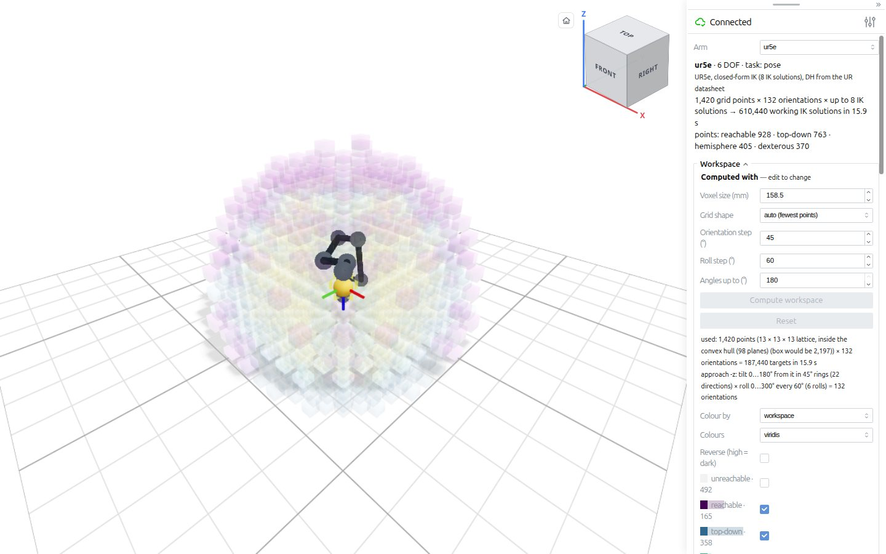
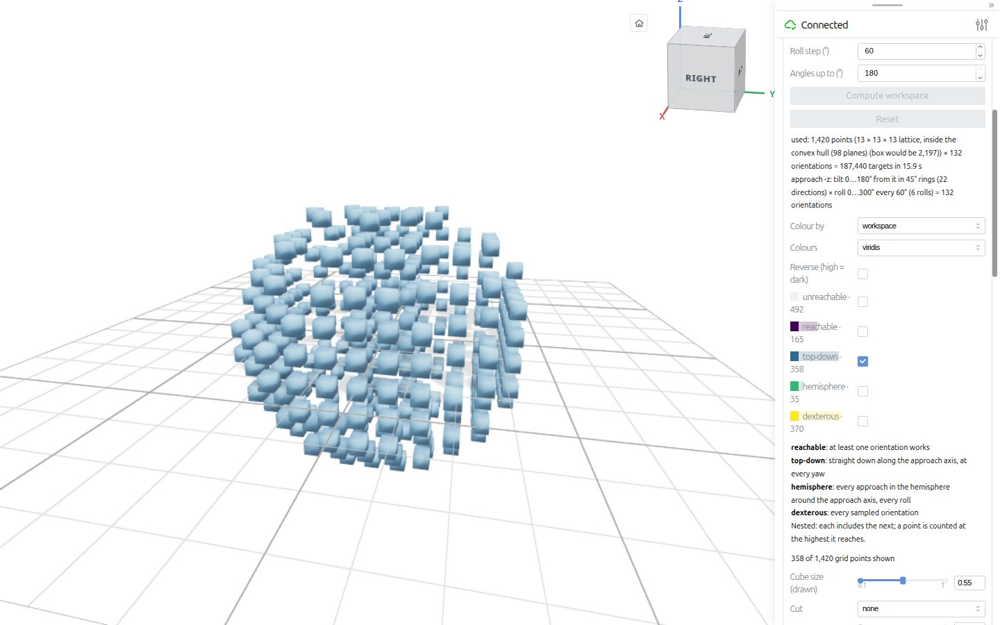
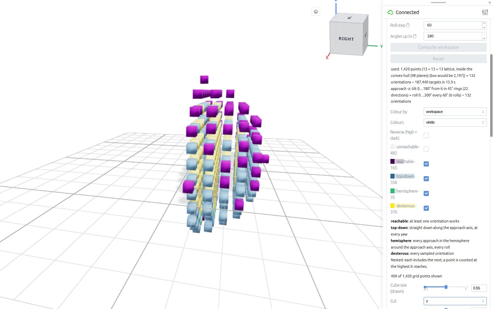
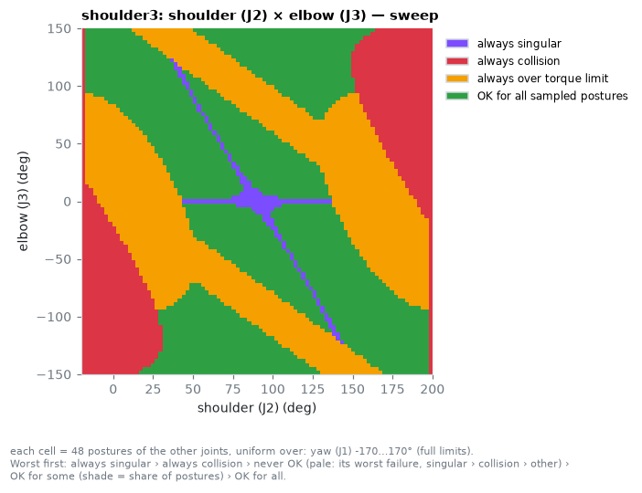
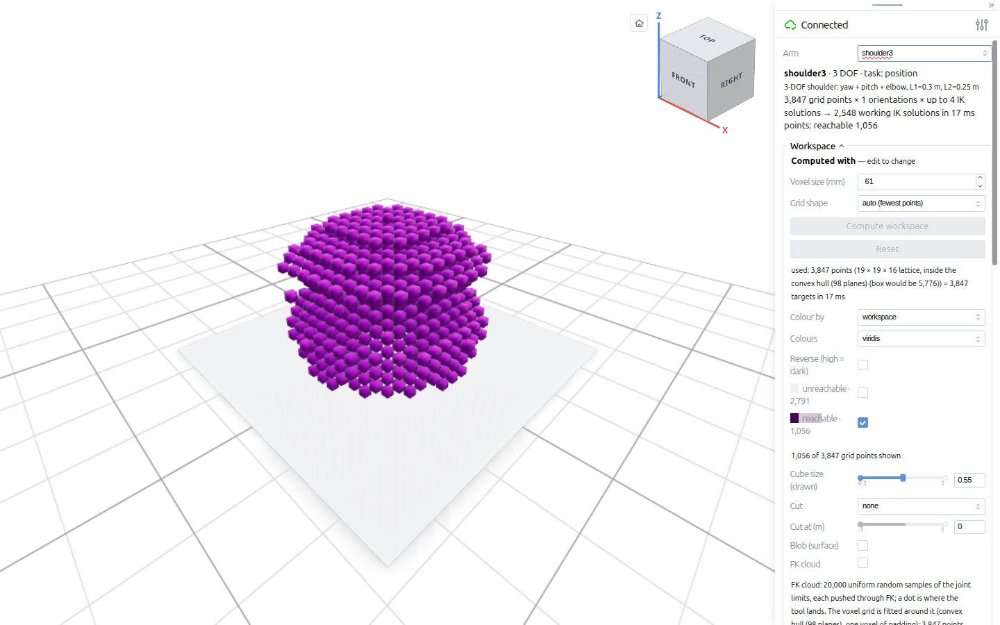

Robot kinematics · open source, MIT
robot_reach
A robot description in; FK, IK and the workspace they reach out. Any number of joints, live in viser.
Load a RobotDescription, a URDF or your own two functions. robot_reach maps where the tool can go and with how much of the pose, keeps every IK solution it finds, re-checks each one, and lets you sample targets from the workspace you trust. Compute once, save plain arrays, click around in viser while Python recomputes.
reachable position onlytop-down straight down, any yawhemisphere any approach in the lower hemispheredexterous every orientation
Recorded from the running viewer in headless Chrome, real mouse clicks, 2× speed: the UR5e's workspace, a point clicked and its IK solutions stepped through, the workspace levels, a cut, then the five-bar and its joint space. GIF

Load a robot, get its workspace, sample it
Kinematics is the centre: an arm is its forward and inverse kinematics. Everything else (the workspace, the joint-space maps, the viewer) is computed from those two functions.
- 1Load a robot
A
RobotDescription, a URDF, or your ownfk(q)andik(T)as batched numpy. Numeric multi-seed IK when there is no closed form. - 2Workspace
rr.analyze(arm): FK sizes the space, IK runs at every point × orientation and keeps every solution. Each point gets a level: how much of the pose the arm controls there. - 3Sample
Draw targets from
workspace(kind), each with the joint angles that reach it, already round-tripped through FK:solutions(p). - →See it live
display()opens viser: click a point, step through its solutions, cut the map, jog the arm. Python recomputes on demand.
import numpy as np
import robot_reach as rr
from robot_reach.robots import ur5e
# 1. Load a robot: its kinematics are FK + IK (or rr.urdf.arm_from_description(description, "tool"))
result = rr.analyze(ur5e())
reach = result.reach
print(f"{reach.arm_name}: {reach.n_positions} grid points x {reach.n_orientations} orientations")
# 2. Its workspace: one mask per kind, every IK answer already re-checked by FK
inside = reach.workspace("hemisphere")
print(f"hemisphere workspace: {inside.sum()} of {reach.n_positions} points")
# 3. Sample: a target the arm reaches, with the joint angles that reach it
p = np.random.default_rng(0).choice(np.flatnonzero(inside))
orientation, configuration, q = reach.solutions(p)[0]
print("target (m):", reach.positions[p].round(3), "| q (deg):", np.rad2deg(q).round(1))
print(f"{len(reach.solutions(p))} working (orientation, IK configuration) pairs at this point")
result.save("out/quickstart_ur5e") # plain npz + json; rr.load("out/quickstart_ur5e").display() opens it live in viser
ur5e: 4224 grid points x 132 orientations
hemisphere workspace: 1409 of 4224 points
target (m): [ 0.416 -0.097 0.06 ] | q (deg): [148.7 -48.6 103.6 34.9 90. 58.7]
1056 working (orientation, IK configuration) pairs at this pointThat output is site/quickstart.py run as shown. Open the five example robots in the viewer:
uv run --project /home/bam/robot_reach --extra viz python -m robot_reach examples
Any DOF, one call
The same rr.analyze(arm) on five arms, from a single pendulum to a six-joint UR5e. Verified
counts joint solutions that passed every check; the bar splits each grid by level. 187,440 target poses on the UR5e, 610,440 verified joint solutions.
reachable position onlytop-down straight down, any yawhemisphere any approach in the lower hemispheredexterous every orientation
Levels count how much of the pose the arm controls at a point; position-only arms stop at the first. Numbers are the saved results the viewer below loads.
Live insight in viser
The result is plain arrays on disk; the viewer draws them and its Python backend recomputes as you click: map a dragged box finer, check every orientation at one point, jog the arm and watch its status and torque.








Joint space, with the reason
One vocabulary of status codes for every picture: a posture fails for a joint limit, a singularity, a collision, the motor torque, or a linkage that cannot close.







Every IK answer is re-checked from the maths (joint limits, the FK round trip, duplicates, torque, singularity), and the collision reasons your FK or IK return are kept. A lazy solver cannot overclaim.
The result log is npz + JSON, no pickle. A viewer, a notebook or another package reads the same numbers; nothing recomputes to look.
The FK cloud bounds the grid, so even a pendulum whose workspace is a circle gets the right picture, and a planar arm's grid collapses onto its plane.
Worked example, executed
Every cell ran as shown; the outputs are the real ones: an arm from two functions, any DOF, a saved UR5e map queried the way a downstream package would, a conveyor belt, a URDF, robot_msgs, someone else's viser scene. Download the notebook or the script; it runs against a local checkout (robot_reach and robot_msgs are not on PyPI yet).
Show all 15 cells and their output
import time
from pathlib import Path
import numpy as np
import robot_reach as rr
from robot_reach import Code
np.set_printoptions(precision=3, suppress=True)
REPO = Path("/home/bam/robot_reach")
print("robot_reach exports:", ", ".join(rr.__all__))
robot_reach exports: Arm, ArmMesh, Box, Code, CODE_COLORS, CODE_LABELS, FKCloud, JointMap, JointRanges, LEVEL_NAMES, OrientationSet, ReachMap, fk_cloud, joint_map, joint_ranges, reach_map, ReachResult, analyze, load1. An arm is two batched functions
A planar 2R arm (shoulder + elbow, link lengths 0.30 m and 0.25 m). FK maps (N, dof) joint
angles to (N, 4, 4) poses. IK maps (N, 4, 4) targets to every branch, (N, S, dof), with
a Code per branch. Here S = 2: elbow up and elbow down. task="position" says the arm is only
asked to match the position, never a false orientation promise.
L1, L2 = 0.30, 0.25
def fk_2r(q):
"""(N, 2) rad -> (N, 4, 4) base->tool, the arm in the x-z plane."""
a, b = q[:, 0], q[:, 0] + q[:, 1]
T = np.tile(np.eye(4), (len(q), 1, 1))
T[:, 0, 3] = L1 * np.cos(a) + L2 * np.cos(b)
T[:, 2, 3] = L1 * np.sin(a) + L2 * np.sin(b)
return T
def ik_2r(T):
"""(N, 4, 4) -> (q (N, 2, 2), code (N, 2)): both elbow branches, a Code each."""
x, z = T[:, 0, 3], T[:, 2, 3]
c2 = (x**2 + z**2 - L1**2 - L2**2) / (2 * L1 * L2)
reachable = np.abs(c2) <= 1.0
q = np.zeros((len(T), 2, 2))
code = np.where(reachable, int(Code.OK), int(Code.NO_SOLUTION))[:, None].repeat(2, axis=1)
for branch, sign in enumerate((+1.0, -1.0)):
q2 = sign * np.arccos(np.clip(c2, -1.0, 1.0))
q1 = np.arctan2(z, x) - np.arctan2(L2 * np.sin(q2), L1 + L2 * np.cos(q2))
q[:, branch] = np.stack([q1, q2], axis=1)
return q, code.astype(np.int8)
arm = rr.Arm(
name="my_2r",
joint_names=("shoulder", "elbow"),
lower=np.deg2rad([-10.0, -150.0]).tolist(),
upper=np.deg2rad([190.0, 150.0]).tolist(),
fk=fk_2r,
ik=ik_2r,
task="position",
plane=((0.0, 0.0, 0.0), (0.0, 1.0, 0.0)), # a planar arm: grids collapse onto its plane
)
q = np.deg2rad([[30.0, 45.0], [90.0, -60.0]])
T, ok = arm.forward(q)
print("FK tool positions (m):\n", T[:, :3, 3], "ok:", ok)
q_all, codes = arm.inverse(T)
print("IK, every branch (deg):\n", np.rad2deg(q_all))
print("codes:", [[Code(int(c)).name for c in row] for row in codes])
print("manipulability at q:", arm.manipulability(q))
FK tool positions (m):
[[0.325 0. 0.391]
[0.217 0. 0.425]] ok: [ True True]
IK, every branch (deg):
[[[ 30. 45. ]
[ 70.687 -45. ]]
[[ 36.009 60. ]
[ 90. -60. ]]]
codes: [['OK', 'OK'], ['OK', 'OK']]
manipulability at q: [0.053 0.065]The library never trusts a solver's OK. arm.check(q) applies the checks it can do itself
(joint limits, the FK round trip, collision, torque, singularity), and the reach map runs the
same checks on every IK branch. Below, a posture outside the shoulder limit and one at the
fully stretched singularity.
probe = np.deg2rad([[30.0, 45.0], [-60.0, 20.0], [60.0, 0.0]])
print([Code(int(c)).name for c in arm.check(probe, singular_tol=0.05)])
['OK', 'JOINT_LIMIT', 'OK']2. Analyze it: compute once
rr.analyze() runs four things and returns one ReachResult:
the FK cloud (sample joints, run FK; bounds the grid so nobody guesses an extent),
the reach map (IK at every grid point x orientation, every branch kept),
the joint maps (the 2R picture for joint pairs) and the joint ranges (limits vs what the
working solutions actually use).
t = time.perf_counter()
result = rr.analyze(arm, floor_z=-0.05)
print(f"analyze: {time.perf_counter() - t:.2f} s")
s = result.summary()
print({k: s[k] for k in ("arm", "dof", "task", "fk_samples")})
print("reach:", s["reach"])
print("joint maps:", [(m["axes"], m["mode"], m["ok_fraction"]) for m in s["joint_maps"]])
analyze: 0.19 s
{'arm': 'my_2r', 'dof': 2, 'task': 'position', 'fk_samples': 19881}
reach: {'positions': 1312, 'orientations': 1, 'ik_branches': 2, 'targets': 1312, 'ok_solutions': 1016, 'branch_codes': {'OK': 1016, 'NO_SOLUTION': 536, 'JOINT_LIMIT': 822, 'COLLISION': 250}, 'points_by_level': {'3': 616, '4': 0, '5': 0, '6': 0}, 'max_solutions_at_one_pose': 2}
joint maps: [(['shoulder', 'elbow'], 'slice', 0.8205)]The result log is plain files: result.json plus compressed npz, no pickle. A viewer, a report,
this notebook or another package reads the same numbers; nothing recomputes to look.
folder = result.save(REPO / "out" / "notebook_my_2r")
print(sorted(p.name for p in folder.iterdir()))
again = rr.load(folder, rebuild_arm=False)
print("reloaded positions:", again.reach.n_positions, "| arm rebuilt:", again.arm is not None,
"(a hand-written arm has no factory; the built-ins do)")
['cloud.npz', 'joint_maps.npz', 'reach.reach.npz', 'result.json']
reloaded positions: 1312 | arm rebuilt: False (a hand-written arm has no factory; the built-ins do)3. Any DOF: the built-in arms
1-DOF pendulum, 2-DOF RR, 2-DOF five-bar (a closed chain whose FK can fail), 3-DOF shoulder and 6-DOF UR5e. The same call on each. The UR5e (about 20 s) is loaded from its saved result in the next section instead of recomputed here.
from robot_reach.robots import five_bar, pendulum, rr as rr_arm, shoulder3 # noqa: E402
for factory in (pendulum, rr_arm, five_bar, shoulder3):
a = factory()
t = time.perf_counter()
res = rr.analyze(a)
dt = time.perf_counter() - t
r = res.reach
if r is None:
print(f"{a.name:9s} dof={a.dof} no grid (its workspace is a curve: see the FK cloud) {dt:5.2f} s")
continue
lv = r.levels()
print(f"{a.name:9s} dof={a.dof} branches={r.n_branches} grid={r.n_positions:5d} "
f"reachable={(lv >= 3).sum():5d} OK branches={len(r.sol_index):6d} {dt:5.2f} s")
pendulum dof=1 no grid (its workspace is a curve: see the FK cloud) 0.01 s
rr dof=2 branches=2 grid= 1476 reachable= 444 OK branches= 592 0.13 s
five_bar dof=2 branches=4 grid= 1517 reachable= 745 OK branches= 1348 0.25 s
shoulder3 dof=3 branches=4 grid= 5776 reachable= 1413 OK branches= 3231 2.68 s4. A downstream consumer: query a saved UR5e map
rr.load() reads the result log and rebuilds the arm from its recorded factory, so the live FK
is back too. The ReachMap is the thing a downstream package reads:
| Call | Shape | Meaning |
|---|---|---|
positions |
(P, 3) | grid points, arm base frame, m |
orientations.R |
(O, 3, 3) | one orientation set shared by every point |
code |
(P, O, S) | final Code per IK branch |
levels() |
(P,) | pose DOF controlled at each point: 0, 3, 4, 5, 6 |
workspace(kind) |
(P,) bool | reachable, four_dof, hemisphere, dexterous |
solutions(p) |
list | every OK (orientation, branch, q) at point p |
target(p, o) |
(4, 4) | the pose a solution reaches |
joint_solutions |
(P, O, dof) | first OK branch per pose (bam_reach v1's field) |
ur = rr.load(REPO / "out" / "ur5e")
m = ur.reach
print(f"{m.arm_name}: {m.n_positions} points x {m.n_orientations} orientations x {m.n_branches} branches")
lv = m.levels()
for level, name in rr.LEVEL_NAMES.items():
print(f" level {level} {name:12s} {(lv == level).sum():5d} points")
print("branch codes:", m.code_counts())
ur5e: 6859 points x 132 orientations x 8 branches
level 0 unreachable 4904 points
level 3 reachable 559 points
level 4 4-DOF 569 points
level 5 hemisphere 128 points
level 6 dexterous 699 points
branch codes: {'OK': 1006878, 'NO_SOLUTION': 5168736, 'SINGULAR': 3420, 'COLLISION': 1064070}Sampling a workspace: the points of the hemisphere workspace (every approach within 90 deg of
straight down, every roll), five of them at random. Today this is three lines of numpy over the
map; a .sample() helper is one of the proposals for the next API, not something that exists yet.
rng = np.random.default_rng(0)
hemi = np.flatnonzero(m.workspace("hemisphere"))
picks = rng.choice(hemi, 5, replace=False)
print(f"hemisphere workspace: {len(hemi)} points; five picks (m):\n", m.positions[picks])
hemisphere workspace: 827 points; five picks (m):
[[ 0.205 -0.308 0.06 ]
[-0.006 0.326 0.8 ]
[-0.323 0.431 0.06 ]
[-0.218 -0.414 0.694]
[ 0.416 -0.097 0.483]]Every IK branch at one point, and the round-trip check done by hand: FK of each stored solution lands back on its target.
p = int(picks[0])
sols = m.solutions(p)
print(f"point {p} at {m.positions[p]}: {len(sols)} OK (orientation, branch) solutions")
o, b, q_sol = sols[0]
print(f"first: orientation {o}, branch {b}, q (deg) = {np.rad2deg(q_sol)}")
T_fk, _ = ur.arm.forward(np.array([s[2] for s in sols]))
T_target = np.array([m.target(p, s[0]) for s in sols])
print(f"max FK(IK) position error over all {len(sols)}: {np.abs(T_fk[:, :3, 3] - T_target[:, :3, 3]).max():.2e} m")
n_here = m.n_solutions[p][m.n_solutions[p] > 0]
print("orientations here by number of OK IK branches:", {int(k): int((n_here == k).sum()) for k in np.unique(n_here)})
point 4093 at [ 0.205 -0.308 0.06 ]: 264 OK (orientation, branch) solutions
first: orientation 0, branch 0, q (deg) = [102.521 -53.139 114.146 28.993 90. 12.521]
max FK(IK) position error over all 264: 6.51e-08 m
orientations here by number of OK IK branches: {2: 48, 4: 42}5. Over a conveyor belt
The use case that motivated the downstream question: which points over the belt can be picked
straight down at any yaw (4-DOF), and which with any approach in the hemisphere? A Box marks
the belt's pick volume in the arm base frame.
belt = rr.Box(center=(0.60, 0.0, 0.15), size=(0.50, 0.80, 0.20)) # x 0.35-0.85 m, z 0.05-0.25 m
inside = belt.contains(m.positions)
for kind in ("reachable", "four_dof", "hemisphere", "dexterous"):
w = m.workspace(kind) & inside
print(f" {kind:10s} {w.sum():3d} of {inside.sum()} grid points over the belt")
reachable 70 of 70 grid points over the belt
four_dof 70 of 70 grid points over the belt
hemisphere 42 of 70 grid points over the belt
dexterous 21 of 70 grid points over the beltThe grid step here is the saved map's (about 0.11 m). For a finer look at just that volume, map the box itself: same arm, same orientation set, a 5 cm grid.
t = time.perf_counter()
fine = rr.reach_map(ur.arm, belt.grid(0.05), rr.OrientationSet.sample(), floor_z=0.0)
print(f"belt box at 5 cm: {fine.n_positions} points in {time.perf_counter() - t:.1f} s")
for kind in ("four_dof", "hemisphere", "dexterous"):
print(f" {kind:10s} {fine.workspace(kind).mean():6.1%} of the belt volume")
belt box at 5 cm: 935 points in 3.9 s
four_dof 98.5% of the belt volume
hemisphere 66.1% of the belt volume
dexterous 51.0% of the belt volume6. From a URDF or a RobotDescription
FK comes from the URDF (stdlib XML + numpy: revolute, continuous, prismatic, mimic). With no
analytic IK, a batched damped-least-squares IK runs from several seeds and keeps the distinct
branches. A bam RobotDescription goes in through arm_from_description, which only calls its
to_urdf_string(), so robot_reach never imports the description package.
from robot_reach.urdf import analyze_chains, arm_from_description, arm_from_urdf, chains # noqa: E402
URDF = """<robot name="yaw_rr">
<link name="base"/><link name="l1"/><link name="l2"/><link name="l3"/><link name="tool"/>
<joint name="J1" type="revolute"><parent link="base"/><child link="l1"/>
<origin xyz="0 0 0.10"/><axis xyz="0 0 1"/><limit lower="-2.9" upper="2.9" effort="5" velocity="3"/></joint>
<joint name="J2" type="revolute"><parent link="l1"/><child link="l2"/>
<origin xyz="0 0 0"/><axis xyz="0 -1 0"/><limit lower="-0.3" upper="3.4" effort="5" velocity="3"/></joint>
<joint name="J3" type="revolute"><parent link="l2"/><child link="l3"/>
<origin xyz="0.30 0 0"/><axis xyz="0 -1 0"/><limit lower="-2.6" upper="2.6" effort="5" velocity="3"/></joint>
<joint name="tool_fixed" type="fixed"><parent link="l3"/><child link="tool"/><origin xyz="0.25 0 0"/></joint>
</robot>"""
print("chains:", chains(URDF))
urdf_arm = arm_from_urdf(URDF, "tool")
print(urdf_arm.name, urdf_arm.joint_names, "task:", urdf_arm.task)
T, _ = urdf_arm.forward(np.deg2rad([[20.0, 60.0, -60.0]]))
print("FK at (20, 60, -60) deg:", T[0, :3, 3])
q_ik, c_ik = urdf_arm.inverse(T)
good = c_ik[0] == Code.OK
print(f"numeric IK: {good.sum()} distinct OK branches (deg):\n", np.rad2deg(q_ik[0, good]))
class TinyDescription:
"""Stands in for a bam RobotDescription: robot_reach only calls to_urdf_string()."""
def to_urdf_string(self, provenance: bool = True) -> str:
return URDF
t = time.perf_counter()
per_chain = analyze_chains(TinyDescription(), floor_z=0.0)
for label, res in per_chain.items():
lv = res.reach.levels()
print(f"{label}: {res.reach.n_positions} grid points, {(lv >= 3).sum()} reachable, "
f"{time.perf_counter() - t:.1f} s")
print("same arm via arm_from_description:", arm_from_description(TinyDescription(), "tool").joint_names)
chains: [('base', 'tool', 3)]
yaw_rr:tool ('J1', 'J2', 'J3') task: position
FK at (20, 60, -60) deg: [0.376 0.137 0.36 ]
numeric IK: 4 distinct OK branches (deg):
[[ 20. 6.009 60. ]
[ 20. 60. -60. ]
[-160. 120. 60. ]
[-160. 173.991 -60. ]]
tool (3 DOF): 2002 grid points, 585 reachable, 4.7 s
same arm via arm_from_description: ('J1', 'J2', 'J3')7. Out to robot_msgs
What crosses a package boundary today. robot_reach's own outputs are numpy arrays and its result log; it hands robot_msgs types at two seams:
NamedPose(robot_msgs.manipulation): the rest-pose solver's pick becomes one (goals.to_named_pose(record)), andrest.named_poses()reads a robot_msgs named-poses JSON.- rotation helpers (
robot_msgs.geometry.rotations.quat_from_matrix,xyzw_to_wxyz): the viewers pose meshes with them.
A consumer that wants messages for a reach solution builds them from the arrays: a 4x4 target is
a Pose, a joint vector is a JointState, a chosen solution is a NamedPose. These three lines
are consumer code, not a robot_reach function (a typed downstream API is in the proposals).
from robot_msgs.geometry import Pose # noqa: E402
from robot_msgs.manipulation import NamedPose, named_poses_from_json, named_poses_to_json # noqa: E402
from robot_msgs.sensor import JointState # noqa: E402
pose = Pose.from_matrix(m.target(p, o))
state = JointState(name=m.joint_names, position=q_sol)
named = NamedPose(name="belt_hover", group="arm", joint_names=m.joint_names, positions=q_sol,
description="A hemisphere-workspace point picked from the UR5e reach map.",
why=f"reach map point {p}, orientation {o}, IK branch {b}")
print(pose)
print(state)
text = named_poses_to_json([named], robot="ur5e", source="robot_reach worked example")
print("round trip:", named_poses_from_json(text)[0].name, "digest", named.digest())
Pose(position=Point(x=0.2050015277152354, y=-0.3082360630441163, z=0.05989070513369671), orientation=Quaternion(x=1.0, y=0.0, z=0.0, w=0.0))
JointState(name=('shoulder_pan', 'shoulder_lift', 'elbow', 'wrist_1', 'wrist_2', 'wrist_3'), position=[ 1.7893, -0.9274, 1.9922, 0.506 , 1.5708, 0.2185])
round trip: belt_hover digest 5a323e02c41c146fThe other direction: a named-poses file goes into the rest-pose tools, which check each pose against the arm (joint names, limits) before measuring it.
from robot_reach.rest import named_poses # noqa: E402
poses_file = REPO / "out" / "notebook_named_poses.json"
poses_file.write_text(text)
choices = named_poses(poses_file, ur.arm)
print([(c.label, np.round(np.rad2deg(c.q), 1).tolist()) for c in choices])
[('belt_hover', [102.5, -53.1, 114.1, 29.0, 90.0, 12.5])]8. Into someone else's viser scene
add_reach_map draws a reach map under any frame of a host's viser scene (a RobotDescription
viewer, a facility layout), so it moves when the robot is placed. It imports nothing from viser
and works on viser 1.0.16 and 1.1.1.
import viser # noqa: E402
from robot_reach.overlay import add_reach_map # noqa: E402
server = viser.ViserServer(host="127.0.0.1", port=8120, verbose=False)
try:
server.scene.add_frame("/cell/robot_1", position=(1.0, 0.5, 0.0), show_axes=False)
overlay = add_reach_map(server, m, parent_frame="/cell/robot_1")
for kind in ("reachable", "four_dof", "hemisphere", "dexterous"):
overlay.kind = kind
print(f"overlay kind={overlay.kind:10s} visible={overlay.visible}")
overlay.visible = False
print("hidden:", not overlay.visible)
finally:
server.stop()
╭──────────────── viser ────────────────╮
│ ╷ │
│ HTTP │ http://127.0.0.1:8120 │
│ Websocket │ ws://127.0.0.1:8120 │
│ ╵ │
╰───────────────────────────────────────╯
overlay kind=reachable visible=True
overlay kind=four_dof visible=True
overlay kind=hemisphere visible=True
overlay kind=dexterous visible=True
hidden: True
(viser) Server stopped9. The viewer
Not run here (it serves until Ctrl-C). Each line is a whole command:
uv run --project /home/bam/robot_reach --extra viz python -m robot_reach examples
uv run --project /home/bam/robot_reach --extra viz python -m robot_reach urdf /abs/path/robot.urdf --floor 0.0
uv run --project /home/bam/robot_reach --extra viz python -m robot_reach rest shoulder3 --solve
In Python: rr.load("out/ur5e").display(). Click a voxel to put the arm there; Next ▶ walks
every (orientation, IK branch) that works at that point; Cut, Blob, Jog and Ask
here (Compute box, Drop POI) compute live in the Python backend.
API
What exists on main today, rendered from docs/api.md. A typed downstream API is being proposed
separately (docs/proposals/); it is not code yet.
Show the API reference
Kinematics in, workspace out. An arm is its forward kinematics (FK) and inverse kinematics (IK),
passed in as pure batched numpy functions, or built from a URDF / RobotDescription. rr.analyze()
computes once where the arm can go and which postures work, with one status code for every "why not".
The result is plain arrays on disk; the viser viewer shows it and recomputes on demand in its Python
backend; anything downstream reads the same arrays.
This page describes the API as it is on main (2026-11-23). The worked example runs every call
below: notebooks/reach_worked_example.py (executed copy:
reach_worked_example.ipynb). What a typed downstream API could look like next is in
docs/proposals/ and section G of reports/reach-proposals-2026-11-23.html; those are proposals, not code.
RobotDescription ─to_urdf_string()─┐
URDF file / XML ───────────────────┼─> arm_from_urdf ─┐
your fk(q), ik(T) ─────────────────┴──────────────────┴─> Arm ──> analyze() ──> ReachResult ──save()──> folder
│ │
display() (viser) <────────┤ load() <─────┘
add_reach_map(server) <────┤
downstream: ReachMap arrays┘ (levels, workspace, solutions)
1. In: an Arm
import robot_reach as rr
arm = rr.Arm(
name="my_arm",
joint_names=("q1", "q2", "q3"),
lower=(-3.0, -1.0, -2.5), # rad (m for prismatic)
upper=(3.0, 2.0, 2.5),
fk=my_fk, # (N, dof) -> (N, 4, 4), or ((N, 4, 4), ok (N,)) / ((N, 4, 4), code (N,))
ik=my_ik, # (N, 4, 4) -> (q (N, S, dof), code (N, S)): EVERY IK solution, a Code each
task="position", # "pose" (6-DOF) | "axis" (5-DOF, roll free) | "position"
)
| Field | Shape / type | Meaning |
|---|---|---|
fk |
(N, dof) -> (N, 4, 4) |
base->tool pose; the tool's +Z is the approach axis; may also return a Code per posture (SELF_COLLISION, FK_FAIL, ...) |
ik |
(N, 4, 4) -> (q (N, S, dof), code (N, S)) |
all S IK solutions (2 for an elbow, 8 for a UR); unused slot = Code.PAD; a collision is a code here |
task |
"pose" \| "axis" \| "position" |
what part of a target the arm is asked to match; no false 6-DOF claim |
skeleton |
(N, dof) -> (N, K, 3) |
points to draw the arm |
mass_points, masses, torque_limits |
(N, dof) -> (N, M, 3), kg, N·m |
static gravity torque vs motor limit |
collision |
(N, dof) -> (N,) bool or Code |
optional thin adapter for a separate checker, folded into the codes; None = not checked here |
configurations |
IKConfigurations |
the questions that name the IK solutions (UR: shoulder × elbow × wrist) and tag(q) answering them from a posture |
singular |
(N, dof) -> (N,) bool |
a mechanism's own singularity test (a five-bar's) |
plane |
point, normal | a planar arm; grids collapse onto it |
meshes, mesh_poses |
ArmMesh parts, (N, dof) -> (N, M, 4, 4) |
posed geometry for clearance and footprint |
velocity_limits, acceleration_limits, friction |
per joint | readiness (time to a pose) and the limp rest |
meta["home"], meta["factory"] |
home posture; the recipe load() uses to rebuild the arm |
Convenience: rr.Arm.from_scalar(name, joints, lower, upper, fk, ik) wraps one-pose-at-a-time
functions (fk(q) -> 4x4, ik(T) -> [q, ...]).
Methods every consumer can call on an Arm: forward(q) -> (T, ok), inverse(T) -> (q, code)
(both chunked), check(q, floor_z=, singular_tol=) -> code, jacobian(q) (N, 6, dof),
manipulability(q), gravity_torque(q), surface(q), within_limits(q), dof, limits.
The library re-checks what it can from the maths alone: joint limits (trying the ±2π twin of revolute joints), the FK round trip, duplicate solutions, torque and singularity. A lazy solver cannot overclaim.
Collision is reported by your FK/IK, never computed here: return Code.SELF_COLLISION,
Code.ENVIRONMENT_COLLISION (or Code.COLLISION) per IK solution or per FK posture and every view
enumerates and colours it. analyze(floor_z=) is only a convenience floor for toy arms.
The tool frame is whatever your FK/IK return: reach is measured for it (add a gripper's TCP to the
chain and the map is the fingers'). One serial chain per Arm today; multiple chains are a planned
extension (each its own Arm until then).
Built-in arms (robot_reach.robots)
pendulum() 1-DOF · rr() 2-DOF · five_bar() 2-DOF closed chain · shoulder3() 3-DOF ·
ur5e() 6-DOF closed-form IK, 8 IK solutions named by configurations. No floor: the UR arms are in free space.
From a URDF or a RobotDescription (robot_reach.urdf)
from robot_reach.urdf import analyze_chains, arm_from_description, arm_from_urdf, chains
chains(desc) # [(base, tip, dof), ...]; desc = path, URDF XML, or a description
arm = arm_from_urdf("/abs/robot.urdf", "tool0")
arm = arm_from_description(desc, "tool0") # duck-typed: only calls desc.to_urdf_string()
results = analyze_chains(desc, floor_z=0.0) # {"tool0 (6 DOF)": ReachResult, ...}
FK from stdlib XML + numpy (revolute, continuous, prismatic, mimic). With no analytic IK, a batched
damped-least-squares IK runs from 8 seeds per target and merges duplicates, so several distinct
branches still come back (the worked example's 3-DOF URDF: 4 branches at one target). Pass ik= when
you have a closed form; it is several times faster.
2. Compute: analyze()
result = rr.analyze(arm) # step=, steps_across=, grid_shape=, box=, orientations=, n_fk=, joint_axes=, singular_tol=, seed=, floor_z=
- FK cloud — sample joints, run FK, classify each sample. Works for any DOF (a pendulum's workspace is a circle no grid would hit) and bounds the grid, so nobody guesses an extent.
- Reach map — the box's lattice kept inside the tightest of box / sphere / cylinder / convex hull
(
grid_shape="auto", padded one step;rr.sampling.fit_grid) × one sharedOrientationSet(22 approach directions × 6 rolls = 132), IK at every target, every IK solution kept with its final code and its IK configuration.config["settings"]records the step, grid shape, lattice and orientation steps. - Joint maps — the 2R picture for joint pairs:
slice(others at home) andsweep(others sampled; value = fraction that works). 1-DOF: a line with its gravity torque. - Joint ranges — per joint, a 10° histogram of the working solutions' angles, against its limits.
Lower-level pieces are public too: rr.fk_cloud, rr.reach_map(arm, positions, orientations),
rr.joint_map, rr.joint_ranges, rr.Box, rr.OrientationSet.sample(approach=...).
3. Store and reload: the result log
folder = result.save("out/ur5e") # result.json + reach.reach.npz + cloud.npz + joint_maps.npz
result = rr.load("out/ur5e") # the arm is rebuilt from meta["factory"] when it has one
result.summary() # plain dict: counts, codes, levels, timings
Pickle-free and versioned (schema strings robot_reach.result.vN / robot_reach.reach_map.vN, bumped when the
layout changes; the examples CLI recomputes a result saved under an older one): readable without the code.
4. Out: what a downstream consumer reads
ReachResult holds reach (a ReachMap, or None for a curve workspace), joint_maps, ranges,
cloud_q / cloud_p / cloud_code, config, timings and the live arm.
ReachMap — the Cartesian answer:
| Member | Shape | Meaning |
|---|---|---|
positions |
(P, 3) | grid points, arm base frame, m |
orientations.R |
(O, 3, 3) | one orientation set shared by every point |
code |
(P, O, S) int8 | final Code per IK branch |
sol_index, sol_q |
(K,), (K, dof) | every OK IK solution: flat index into (P, O, S), and its joints |
sol_config, configurations |
(K,) uint8, IKConfigurations |
each solution's IK configuration (from its posture), and the questions |
filtered(allowed) |
ReachMap |
only the allowed IK configurations: m.filtered(m.configurations.allowed(elbow="up")) |
n_solutions |
(P, O) | count of OK IK solutions |
valid_mask, reach_scores |
(P, O), (P,) | bam_reach v1 field names, kept |
joint_solutions |
(P, O, dof) | first OK solution per pose, NaN if none (v1's shape; robot_trajectories duck-types it) |
levels(threshold=1.0) |
(P,) | workspace level as an int key of LEVEL_NAMES: 0 unreachable, 3 reachable, 4 top-down, 5 hemisphere, 6 dexterous |
workspace(kind, threshold=1.0) |
(P,) bool | reachable · four_dof (top-down) · hemisphere · dexterous |
score(kind) |
(P,) | fraction of that kind's orientations reachable |
solutions(p) |
list | every OK (orientation index, solver slot, q) at point p (solution_configs(p): their configurations) |
target(p, o) |
(4, 4) | the pose a solution reaches |
code_counts() |
dict | branches per code |
Workspaces, by name (rr.LEVEL_NAMES): reachable (at least one orientation works) · top-down
(straight down along the approach axis at every yaw) · hemisphere (every approach in the hemisphere,
every roll) · dexterous (every sampled orientation). Nested: each includes the next. All four are
masks over one map.
Code (rr.Code, rr.CODE_LABELS, rr.CODE_COLORS) — one vocabulary for every view:
OK, NO_SOLUTION, JOINT_LIMIT, SINGULAR, COLLISION, SELF_COLLISION, ENVIRONMENT_COLLISION
(the three collision codes are returned by your IK/FK; rr.codes.is_collision), TORQUE_LIMIT,
FK_MISMATCH, FK_FAIL (linkage cannot close), EXCLUDED (a filtered-out IK configuration, in memory
only), PAD (unused slot).
Typical downstream queries today are a few lines of numpy over these arrays (worked example §4-5):
m = rr.load("out/ur5e").reach
hemi = np.flatnonzero(m.workspace("hemisphere")) # sample a workspace
p = np.random.default_rng(0).choice(hemi)
for o, slot, q in m.solutions(p): ... # every IK solution there
belt = rr.Box(center=(0.6, 0, 0.15), size=(0.5, 0.8, 0.2))
over_belt = belt.contains(m.positions) & m.workspace("four_dof") # top-down pickable over the belt
fine = rr.reach_map(arm, belt.grid(0.05), rr.OrientationSet.sample()) # finer map of one volume
There is no ReachMap.sample() or typed query object yet; that is what the proposals are about.
5. Look: viser
result.display() # blocks; the viewer recomputes live in Python
from robot_reach.overlay import add_reach_map
overlay = add_reach_map(server, result.reach, parent_frame="/cell/robot_1") # into anyone's viser scene
overlay.kind = "four_dof"; overlay.update(colormap="magma", reverse=True); overlay.visible = False
overlay.py imports nothing from viser and works on viser 1.0.16 and 1.1.1. CLI:
python -m robot_reach examples | urdf <path> | rest <spec> [--solve].
In the viewer: a settings card (what the map was computed with; edit → Compute workspace), colour by workspace / IK solutions / fraction / consistency through a colormap (viridis default) or a traffic light, a legend list (click a bin to hide it), IK configurations toggles that filter everything, click a voxel to put the arm there, Next ▶ walks every (orientation, IK solution) with its configuration's name; Cut, Blob (voxel surface that keeps holes), FK cloud, Jog sliders with live code and torque, Ask here → a box you move and tilt in 3-D (its −Z is the approach) → Compute box and Drop POI; joint ranges as one histogram per joint; show/hide the skeleton.
6. Rest and ready poses (robot_reach.rest, robot_reach.goals)
RestStudy(arm, Scene, motors, gates, criteria).measure(q) → footprint, clearance over a belt and
holding power; goals.solve(study, PoseGoal(...)) → gates, Pareto set, pick, and a NamedPose-ready
record. See the README's "Find a good ready/rest pose" section.
robot_msgs: types used and produced
robot_reach's core (FK, IK, the reach map, the result log) speaks numpy arrays: 4×4 homogeneous poses and joint vectors in radians, SI. It is the shared vocabulary only at these seams today:
| robot_msgs name | Direction | Where | What for |
|---|---|---|---|
manipulation.NamedPose |
produced | goals.to_named_pose(record) |
a solved rest/ready pose as a saved, digest-stamped joint pose |
manipulation.named_poses_from_json (→ NamedPose) |
consumed | rest.named_poses(file, arm), rest --poses |
read a description's named-poses file and check each pose against the arm |
geometry.rotations.quat_from_matrix, xyzw_to_wxyz |
used | viewer.py, rest_viewer.py |
rotation matrix → viser's wxyz quaternion for posing meshes |
Not robot_msgs, but the kinematics input: RobotDescription (bam_robot_descriptions, in bam_ws) is
duck-typed through to_urdf_string(); robot_reach never imports it.
A consumer that wants messages for a reach solution builds them from the arrays (worked example §7):
robot_msgs.geometry.Pose.from_matrix(m.target(p, o)), robot_msgs.sensor.JointState(name=m.joint_names,
position=q), robot_msgs.manipulation.NamedPose(...). robot_reach does not return Pose, JointState or
a workspace message itself today; a typed workspace hand-off is in the proposals.
Run it
uv run --project /home/bam/robot_reach --extra viz python /home/bam/robot_reach/notebooks/reach_worked_example.py
Start with the quickstart, watch the viewer, or read the worked example.